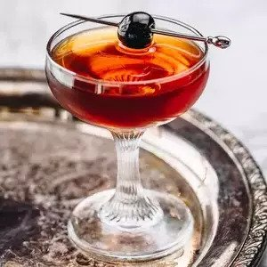

Manhattan

Description
The Manhattan was the most famous cocktail in the world shortly after it was invented in New York City’s Manhattan Club, some time around 1880.
Over the years, the whiskey classic has dipped in and out of fashion before finding its footing as one of the cornerstones of the craft cocktail renaissance.
Ingredients
- 2 ounces rye whiskey
- 1 ounce sweet vermouth
- 2 dashes Angostura bitters
- 1 dash orange bitters
- Garnish: brandied cherry or lemon twist
Steps
- Add the bourbon (or rye), sweet vermouth and both bitters to a mixing glass with ice, and stir until well-chilled.
- Strain into a chilled coupe.
- Garnish with a brandied cherry or a lemon twist.
Return to Recipes Page